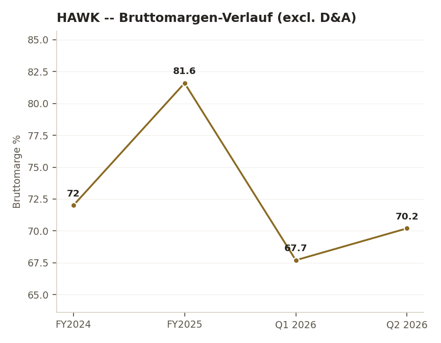
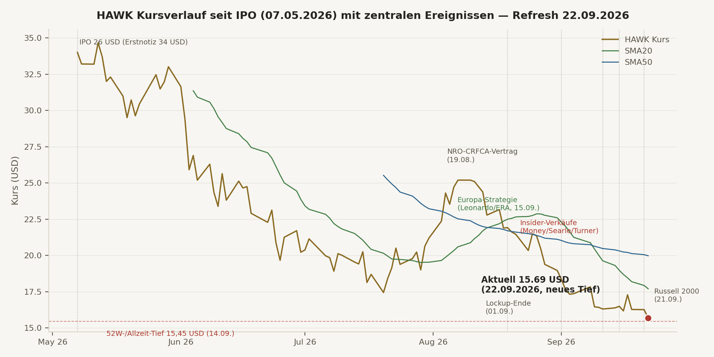
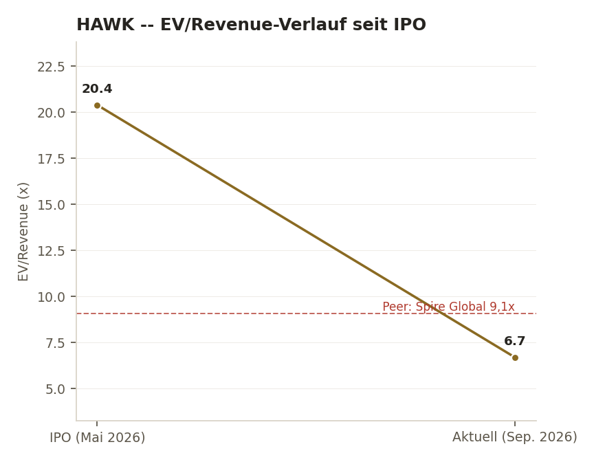
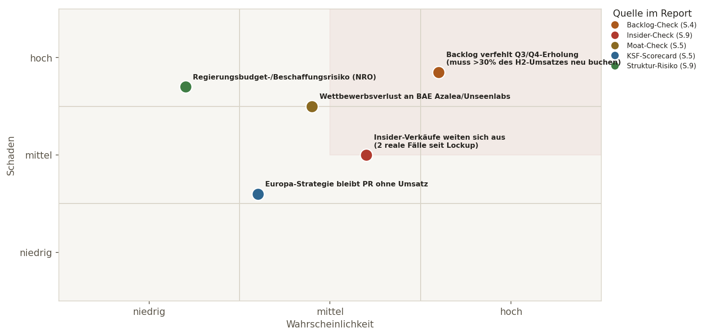

Das operative Geschäft bleibt unverändert stark. Kein neues Quartal seit dem letzten Full Deep Dive (16.09.) — Q2 2026 bleibt der aktuelle Stand: Umsatz $49,8 Mio. (+87% YoY), $503 Mio. Cash ohne Schulden, Bruttomarge 70-82%. Der Auftragsbestand ($292,2 Mio., 30.06.) bleibt die zentrale, unverändert offene Frage bis zu den Q3-Zahlen (~November/Dezember).
Was sich seit dem 16.09. wirklich geändert hat. Ein DRITTER Insider (Michael Turner) verkaufte am 15./16.09. zusätzlich 26.506 Aktien über einen 10b5-1-Plan — damit haben seit dem Lockup-Ende drei verschiedene Personen (Director Money, CFO Searle, Insider Turner) Aktien verkauft, keine Netto-Käufe. Die Russell-2000-Aufnahme ist jetzt wirksam (21.09., reiner Index-Katalysator). Der Kurs fiel weiter auf ein neues Allzeittief ($15,45 am 14.09., aktuell $15,69).
Eigener Prozess-Fund, transparent benannt. Beim Dispatch an JJ/Conan wurde versehentlich der Stand vom 09.09. statt vom 16.09. als Vergleichsbasis verwendet — die mitgeteilten Fakten waren korrekt, aber zwei Punkte (Money/Searle-Verkäufe, Europa-Strategie) waren bereits im 16.09.-Report bekannt, nicht neu. Details Seite 11.
Der Cross-Check-Befund. JJ und Conan justieren beide vorsichtiger (kein Upgrade, kein hartes Downgrade), JJ deutlich stärker als Conan — ein Grad-, kein Richtungsunterschied. Details Seite 2.
HALTEN
Konfidenz 🟡 MITTEL, tendenziell leicht geschwächt · Tier 3
Vorsichtig konstruktiv
Management-Score 7→5-6/10, Bear-Gewicht 15%→25%
Beobachten, negativer Bias
Management-Score 8,0→7,5/10, Bear-Gewicht 15%→18%
Am 16.09. wurde dieser Report bewusst auf einen "Fresh-Eyes-Test" umgestellt, nachdem Brian zu Recht eine Status-quo-Verzerrung angemerkt hatte. Erneuter Check heute: Würde Aegis HAWK bei $15,69 als komplett neuen Kandidaten zum Kauf empfehlen? Weiterhin Nein. Backlog wächst nicht mit dem Umsatz mit, jetzt drei statt zwei reale Insider-Verkäufe seit Lockup-Ende, die Technik bleibt bearish (wenn auch nahe überverkauft), GAAP bleibt verlustig. Als Neukandidat wäre das Urteil weiterhin BEOBACHTEN, kein Kauf. Für die bestehende, sehr kleine Position ändert das die Handlungskonsequenz nicht — kein Nachkauf, keine aktive Reduzierung allein wegen der Größe.
HawkEye 360 hat weiterhin eine kapitalstarke, schuldenfreie Bilanz ($503 Mio. Cash) und echtes Umsatzwachstum (+87% YoY, letztes bekanntes Quartal). Aber: der Auftragsbestand wächst weiterhin nicht mit dem Umsatz mit, und die Insider-Verkaufsserie hat sich mit Michael Turner auf einen dritten Insider ausgeweitet. Die weitere Kursschwäche macht die Bewertung (EV/Forward-Revenue jetzt ~4,76x, von 5,14x am 16.09.) optisch günstiger — beide KIs sind sich einig, dass das allein noch kein Kaufsignal ist, solange Backlog und Insider-Bild nicht klarer werden. Die bestehende Kleinposition zu halten bleibt vertretbar, weil ihre Größe die Entscheidung wenig konsequenzreich macht, nicht weil die These stark wäre.
$503 Mio. Cash ohne Schulden, +87% Umsatzwachstum (letztes Quartal), Bruttomarge 70-82%, echte Europa-Expansion (Leonardo/ERA), EV/Forward-Revenue jetzt nur noch ~4,76x.
Backlog unter Vorjahresendstand, jetzt drei (statt zwei) reale Insider-Verkäufe seit Lockup-Ende, neues Allzeittief, TA weiterhin bearish (wenn auch nahe überverkauft).
Q3-2026-Zahlen (~November/Dezember, Backlog entscheidend), weitere Insider-Transaktionen, erste Umsatzverträge aus den Europa-MoUs, Reversal-Bestätigung über $16,80-17,30.
Fresh-Eyes-Urteil unverändert: aktuell KEIN Kaufkandidat. Bestehende Kleinposition unangetastet — kein Nachkauf vor Backlog-Erholung, keine aktive Reduzierung wegen der Größe.
| Kriterium | Schwelle/Erwartung | Ist-Wert | Status |
|---|---|---|---|
| K-Kriterien (Gatekeeper) | |||
| Umsatzwachstum | Stark, beschleunigend | Q2 +87% YoY ($49,8 Mio.), international +134%, FY26-Guidance $215-220 Mio. | ✅ Erfüllt |
| Bruttomarge/Unit Economics | Hoch, software-ähnlich | ~70-82% je Berechnungsbasis | ✅ Erfüllt |
| Operative Profitabilität in Formation | Adj.EBITDA/FCF Richtung positiv | Adj.EBITDA $7,0 Mio. (14%), FCF Q2 $5,4 Mio. positiv, H1 gesamt leicht negativ | 🟡 Grenzfall |
| Bilanzqualität | Solide, kapitalisiert | Cash $503 Mio., keine langfristigen Schulden | ✅ Erfüllt, sehr stark |
| Backlog/Revenue-Visibility | Wachsend, mind. stabil | $292,2 Mio. (30.06.) vs. $302,7 Mio. (FY25-Ende) — unverändert offen, keine neue Zahl | 🟡 Gelbe Flagge, unverändert |
| E-Kriterien | |||
| GAAP-Profitabilität | Trend Richtung positiv | Q2-Nettoverlust $15,3 Mio., primär D&A/SBC/Einmaleffekte | ❌ Negativ, aber erklärbar |
| Kundenkonzentration | Diversifizierend/Beobachten | Mehrere Kunden >10% Umsatzanteil | 🟡 Beobachten |
| Kundenqualität/Missionskritikalität | Hoch | NRO-CRFCA operativ, Leonardo-MoU (Europa) | ✅ Erfüllt |
| Dilution/SBC-Risiko | Kontrolliert | SBC ~15% des Umsatzes | 🟡 Beobachten |
| Insider-Alignment | ≥10% | ~15,2% Directors/Officers-Gruppe — jetzt mit DREI (statt zwei) realen Verkaufsfällen seit Lockup-Ende zu relativieren | 🟡 Substanziell, Beobachtungspunkt gewachsen |
| Marktgröße/TAM | Belegt, wachsend | $1,62→$3,45 Mrd. (8,7% CAGR), europäischer Fußabdruck | 🟡 Solide, kein Hyper-TAM |
DNA-Urteil unverändert: 5/5 K-Kriterien im grünen bis gelben Bereich (kein Abbruch), 4 von 6 E-Kriterien mit Beobachtungs-Flag (Insider-Alignment jetzt mit gewachsenem statt unverändertem Beobachtungspunkt). Kein sauberer Fall in beide Richtungen.
| Stichtag | Quartalsumsatz | YoY-Wachstum | Backlog | Backlog-Δ QoQ |
|---|---|---|---|---|
| 31.12.2025 (FY25-Ende) | — | FY25 gesamt +74% ($117,7 Mio.) | $302,7 Mio. | — |
| 31.03.2026 (Q1) | ~$49,8 Mio. (H1-Anteil) | H1 +101% | $285,0 Mio. | -5,8% |
| 30.06.2026 (Q2, aktuellster Stand) | $49,8 Mio. | +87% | $292,2 Mio. | +2,5% |
Backlog liegt weiterhin unter dem Stand zum Jahresende 2025, trotz durchgehend starkem Umsatzwachstum. Für die FY26-Guidance-Mitte ($217,5 Mio.) fehlten nach dem H1-Umsatz ($99,6 Mio.) noch $115-120 Mio. in H2 — rund 30% des H2-Bedarfs muss aus neuen Aufträgen kommen. Keine neue Zahl seit dem 16.09.-Report — nächste Daten erst zu Q3-2026 (~November/Dezember 2026).
| Datum | Guidance | Status |
|---|---|---|
| Mai 2026 (424B4-IPO-Prospekt) | FY2026 Umsatz $215-220 Mio., Adj.-EBITDA $30-36 Mio. | Erste Guidance überhaupt |
| 20.08.2026 (Q2-2026-Call) | unverändert bestätigt | 🟡 Bestätigt, nicht angehoben |
Kein Ist-vs-Guidance-Vergleich über mehrere Jahre möglich — HawkEye ist frisch gelistet (IPO Mai 2026).
| Dimension | Befund | Einordnung |
|---|---|---|
| Founder-Market-Fit | CEO John Serafini seit 2016 im Unternehmen, Army/Harvard-Hintergrund, starkes Defense-Netzwerk | 🟢 Stark |
| Europa-Kommunikation | Serafini betonte in Statements zur Leonardo-/ERA-Vereinbarung die europäische Datensouveränität explizit | 🟢 Transparent |
| Public-Company-Track-Record | CFO erst seit September 2025 im Amt, IPO erst Mai 2026 — noch kein langer Track Record | 🟡 Jung, unbewiesen |
| Insider-Alignment / -Verkäufe | ~15,2% Directors/Officers-Gruppe, jetzt DREI reale Verkäufe (Money, Searle, Turner) seit Lockup-Ende — Money's Optionsausübung+Verkauf qualitativ das schwächste Signal | 🟡 Beobachtungspunkt gewachsen |
| Kapitalallokation | IPO-Erlös zur Schuldenrückzahlung genutzt, $125-Mio.-Kreditlinie ungenutzt als Reserve | 🟢 Solide, konservativ |
| Kennzahl | Wert (16.09. in Klammern) |
|---|---|
| Kurs | $15,69 ($16,37) [LIVE] |
| Shares Outstanding | ~97,97 Mio. |
| Market Cap | ~$1.537 Mio. (~$1.605 Mio.) |
| Cash (30.06., unverändert) | $503,4 Mio. |
| EV (ex Cash) | ~$1.034 Mio. (~$1.118 Mio.) |
| EV/Revenue TTM | ~6,17x |
| EV/Forward-Revenue (FY26-Guidance-Mitte) | ~4,76x (5,14x) |
Beide KIs unabhängig einig: die weitere Multiple-Kompression macht HAWK optisch günstiger, ist aber allein noch kein Value-Signal — solange Backlog und Insider-Bild nicht klarer werden. Auf EV/Sales-Basis bleibt HAWK im Mittelfeld der Aerospace&Defense-Bandbreite (2,9x-11,45x je Sub-Segment).

Marge fiel von 81,6% (FY2025) auf 67,7-70,2% (2026, ISA-Akquisitions-Effekt). Keine neue Quartalszahl seit 16.09.
Positiv: proprietäres RF-Datenarchiv (>1 Mrd. Datenpunkte), vertikale Integration (Collection→Analytics), NRO-Operationalisierung als starkes Switching-Cost-Indiz, First-Mover als einzige börsennotierte kommerzielle RF-SIGINT-Konstellation. Europa-Strategie (Luxemburg-Tochter, Leonardo-MoU, ERA-Vereinbarung, 15.09.) weiterhin als echter struktureller Fortschritt gewertet — noch keine Folgeverträge, aber auch kein Rückzieher.
Schwächen: kein Monopol (Unseenlabs/Frankreich, BAE Systems Azalea als kapitalstarker Prime Contractor real), Switching-Costs noch nicht auf SaaS-Niveau bewiesen, Nischenrisiko real (Kleos-Space-Insolvenz 2023 als Präzedenzfall).


Kursdaten: Twelve Data, Tagesbasis, seit IPO (07.05.2026). EV/Revenue-Kompression setzt sich fort: ~20,4x (IPO) → ~5,14x (16.09.) → ~4,76x (heute, Forward-Basis) — primär weiterer Kursverfall, nicht Umsatzrückgang. Peer Spire Global zuletzt ~9,1x.
| Kurs vs. SMA20/SMA50 | $15,69 vs. $17,69 / $19,97 | Klar unter beiden |
| Seit IPO / vom 52W-Hoch | -53,9% / -56,1% (neues Allzeittief $15,45, 14.09.) | Bearish, neues Tief |
| RSI(14) | 32,0 (30,3) | Nahe überverkauft, unverändert |
| MACD | -1,37, Signal -1,34, Hist. -0,02 (Hist. -0,18 am 16.09. — deutliche Verengung) | Bearish, Momentum-Verlust verlangsamt sich weiter |
| Bollinger | $21,14 / $17,69 / $14,24 — Kurs zwischen Mittel- und unterem Band, näher am unteren | Untere Zone, Band nicht durchbrochen |
| OBV-Trend | Kurze Stabilisierung Mitte September, seit 18.09. wieder klar fallend | Erneute Distribution |
Weiterhin BEARISH, nahe überverkauft
Kurs auf neuem Allzeittief, RSI nahe überverkauft (unverändert), OBV zeigt nach kurzer Stabilisierung wieder Distribution. Die MACD-Histogramm-Verengung (-0,18→-0,02) ist der einzige Lichtblick — ein früher, unbestätigter Hinweis auf nachlassenden Abwärtsdruck, kein Reversal-Signal.
Bewertung: Sektor-Mittelfeld, jetzt günstiger (EV/Fwd-Revenue ~4,76x)
Technik: klar bearish, kein Bodenbildungssignal
Konsequenz: stützt HALTEN unverändert — weder Kauf- noch Verkaufssignal.
| Termin | Was beobachten | Positives Signal | Warnsignal |
|---|---|---|---|
| ~November/Dezember 2026 | Q3-2026-Zahlen | Backlog Richtung >$320-350 Mio. ODER klares Book-to-Bill-Argument, sinkender SBC-Anteil | Backlog fällt weiter unter $292 Mio., keine neuen Großaufträge |
| Laufend | Insider-Transaktionen | Keine weiteren Verkäufe über die drei bekannten Fälle hinaus, idealerweise Open-Market-Käufe | Weitere, größere oder unbegründete Verkäufe |
| ✅ 21.09.2026, erledigt | Russell-2000-Aufnahme | Bestätigt wie angekündigt, wirksam — moderater Indexfonds-Kaufdruck | — |
| Laufend | Europa-Strategie (Leonardo/ERA) | MoUs werden zu konkreten Umsatzverträgen | MoUs bleiben unverbindlich, keine Folgeverträge binnen 1-2 Quartalen |
Kein Trigger VOLLSTÄNDIG ausgelöst (Bedingung ist UND, nicht ODER) — Halten bleibt vertretbar, aber der erste Trigger ist näher an der Auslösung als am 16.09.
| Position | Wert | Einordnung |
|---|---|---|
| Cash & Äquivalente (30.06.) | $503 Mio. | Sehr solide |
| Langfristige Schulden | $0 | $49,5 Mio. Altschulden nach IPO zurückgezahlt |
| Kreditlinie (5J, revolvierend) | $125 Mio., ungenutzt | Reserve, nicht in Anspruch genommen |
| SBC (Q2 2026) | $7,5 Mio. (~15% des Umsatzes) | Dilutions-Warnsignal, typisch für frische Post-IPO-Unternehmen |
| Datum | Person | Transaktion | Einordnung |
|---|---|---|---|
| 11.09.2026 | Arthur L. Money (Director) | Verkauf 50.000 Aktien @ Ø $16,41, nach Optionsausübung ($0,23 Ausübungspreis) | 🟡 Diskretionär, qualitativ das schwächste Signal (kein Vesting-/10b5-1-Zwang) |
| 15.09.2026 | Craig Searle (CFO) | Sell-to-Cover 9.228 von bis zu 19.189 möglichen Aktien, Steuerdeckung RSU-Vesting @ $16,29 | 🟡 Routine, kein freies Abstoßen |
| 15./16.09.2026 | Michael Turner (Insider) | 8.250 Aktien @ $16,29 + 18.256 Aktien @ $16,24 (26.506 gesamt) — laut Presse über 10b5-1-Plan | 🟡 Vordefiniert, aber real — NEU seit 16.09. |
Einordnung: per SEC-Form-4-Direktabruf verifiziert. Drei verschiedene Personen innerhalb einer Woche, keine Netto-Käufe. Zwei der drei Fälle (Searle, Turner) sind vordefiniert/vesting-getrieben, nicht frei diskretionär — der Money-Fall (echte Optionsausübung + sofortiger Verkauf) bleibt das qualitativ kritischste Einzelsignal. Kein Alarmsignal, aber ein gewachsener Beobachtungspunkt ggü. dem 16.09.-Stand.
Regierungskunden-Konzentration (NRO + verbündete Nachrichtendienste), Einzelkunden-Konzentration >10% bei mehreren Kunden, Wettbewerbsverdichtung durch BAE Systems Azalea als kapitalstarker Prime Contractor, Space-/Execution-Risiko (Launch, Satellitenausfälle).

| Risiko | Herkunft im Report | Frühindikator |
|---|---|---|
| Backlog verfehlt Q3/Q4-Erholung | Backlog-Check (S.4) | Q3-Backlog bleibt unter $300 Mio. oder fällt weiter |
| Insider-Verkäufe weiten sich weiter aus | Insider-Check (S.9) | Weitere Form-4-Verkäufe über die drei bekannten Fälle hinaus — Trend bereits wachsend (2→3) |
| Wettbewerbsverlust an BAE Azalea/Unseenlabs | Moat-Check (S.5) | Bekanntwerdung einer verlorenen Ausschreibung |
| Europa-Strategie bleibt PR ohne Umsatz | Moat-Check (S.5), Insider-Check (S.9) | Keine Folgeverträge aus Leonardo/ERA-MoUs binnen 1-2 Quartalen |
| Regierungsbudget-/Beschaffungsrisiko (NRO) | Struktur-Risiko (S.9) | Budgetkürzungen oder Vertragsverzögerungen bei US-Regierungskunden |
Einordnung: der obere rechte Quadrant (Hoch-Wahrscheinlichkeit/Hoch-Schaden) enthält weiterhin die Backlog-Frage als zentralen, wiederkehrenden Unsicherheitsfaktor — jetzt ergänzt um den wachsenden Insider-Verkaufstrend als zweiten, real (nicht nur hypothetisch) beobachtbaren Punkt.
Beim Dispatch der Refresh-Anfrage an JJ und Conan wurde versehentlich der Stand vom 09.09.2026 (letzter vollständiger 3-fach-Check) statt vom 16.09.2026 (letzter, nur 2-fach durchgeführter Zwischenstand, damals mit Fresh-Eyes-Korrektur) als "letzter bekannter Stand" verwendet. Sachlich blieb das folgenlos — alle mitgeteilten Fakten waren korrekt datiert und real — aber zwei der als "neu seit dem letzten Full Deep Dive" präsentierten Punkte (Insider-Verkäufe von Money/Searle, Europa-Strategie Leonardo/ERA) waren bereits im 16.09.-Report bekannt und dort bereits in die HALTEN-Einschätzung eingepreist. Wirklich neu seit dem 16.09. sind nur: die zusätzlichen Insider-Verkäufe von Michael Turner, die jetzt wirksame Russell-2000-Aufnahme, und die weitere Kursentwicklung zum neuen Allzeittief.
JJs und Conans fachliche Einschätzungen bleiben inhaltlich valide, weil sie sich korrekt auf reale, richtig datierte Ereignisse stützen — nur die Rahmung "was ist neu seit dem letzten Check" musste in dieser Aegis-Synthese nachträglich auf die korrekte Basis (16.09.) zurückgeführt werden. Dieser Fund wird hier transparent benannt statt stillschweigend übergangen, konsistent mit der bereits am 16.09. etablierten Praxis, Status-quo-Verzerrungen offen zu machen statt zu glätten.
Sowohl JJ (Gemini) als auch Conan (ChatGPT) waren in dieser Sitzung durchgehend erreichbar — erster echter 3-fach-Check für HAWK seit dem 09.09.2026 (am 16.09. war die OpenAI-Bridge ausgefallen, siehe damaliger Report).
Fresh-Eyes-Test erneut bestätigt: Würde Aegis HAWK bei $15,69 heute als neuen Kandidaten kaufen? Nein. Backlog wächst weiterhin nicht mit dem Umsatz mit, jetzt drei statt zwei reale Insider-Verkäufe, die Technik bleibt bearish (nahe überverkauft), GAAP bleibt verlustig, neues Allzeittief. Die starke Bilanz und das Wachstum reichen weiterhin nicht aus, um diese Häufung offener Fragen aufzuwiegen — aber auch keiner der beiden Kill-Sheet-Abstufungs-Trigger ist VOLLSTÄNDIG erfüllt (Backlog-Bedingung offen). Aegis' Synthese: HALTEN bleibt "keine überzeugende Kaufthese, Position zu klein für aktives Handeln" — Konfidenz 🟡 MITTEL, tendenziell leicht geschwächt statt verstärkt.
HawkEye 360 bleibt Kategorie Profi. Kein Nachkauf vor einer klaren Backlog-Erholung — auf Fresh-Eyes-Basis wäre das aktuell ohnehin kein Kaufkandidat. Keine aktive Reduzierung. Nächster Pflicht-Prüfpunkt unverändert: Q3-2026-Zahlen (~November/Dezember 2026), jetzt mit der zusätzlichen Auflage, die Insider-Transaktionsfrequenz weiter zu beobachten.